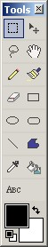
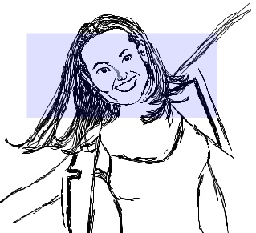

Rectangle Select
|
 The Rectangle Select tool (Tools-->Rectangle Select) is one of the primary methods in which you can select a piece of the graphic for either modification, deletion, or copying. The use of this tool is rather simple. For a single selection box, click the selection tool as shown in the tool bar graphic, and then click and drag to highlight a region on the currently active layer. If you hold down the shift key in combination with the click and drag, you can highlight multiple areas on the layer.
|
|
 The picture to the left is an example of a click and drag selection region. Now that this region is selected, any number of possibilities are available. For instance, you can blur the region with Effects --> Blur. Or, you can Cut it out with Edit--> Cut.
|
| Important: Once a selection region (or regions) are created, you may only alter that region. This includes any and all alterations. For instance, if selection regions are made, the Pencil Tool will only work in those regions until those regions are unselected. To unselect a region, ensure the Rectangle Tool (or Lasso Select) tool is activated, click on a region without dragging, and the the selection region will be cancelled. Then you may continue working on the entire canvas as a whole. |